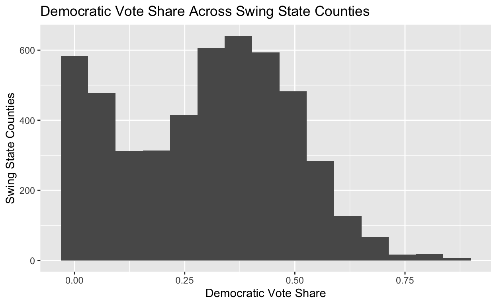
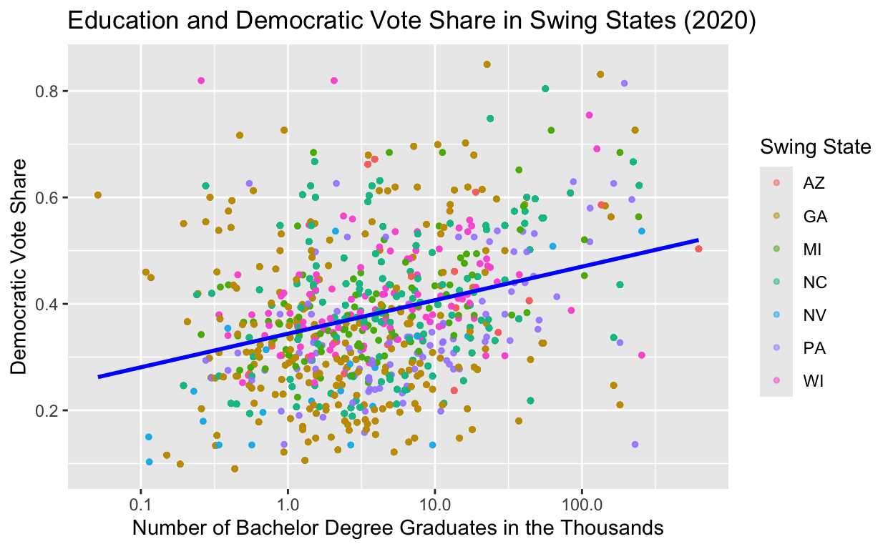
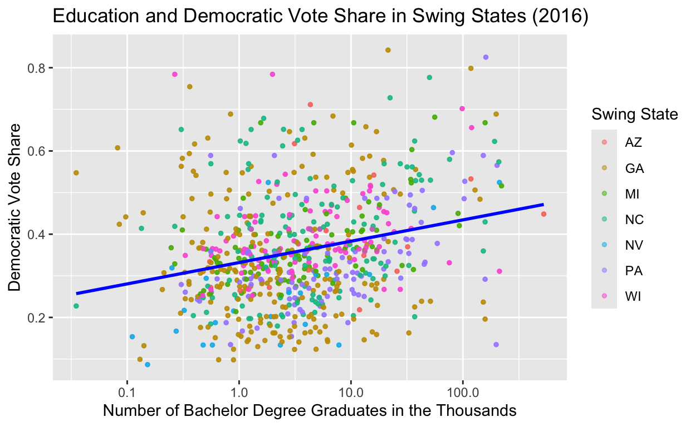
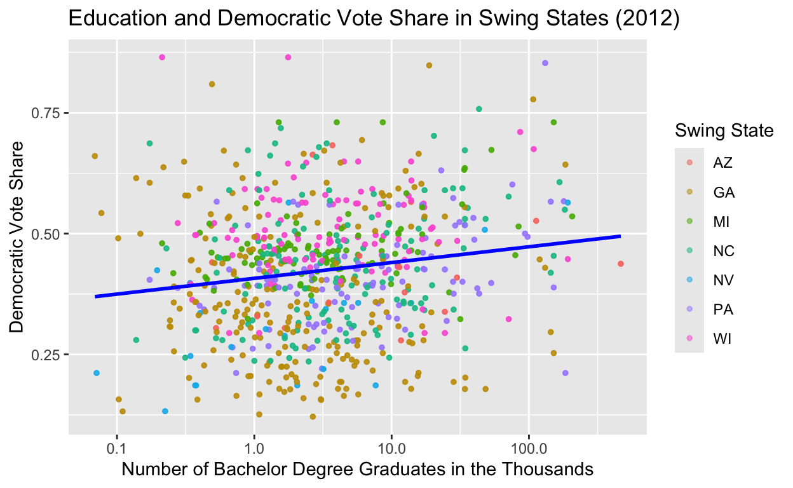

A look to see if the college education levels dictate Democratic vote share in essential swing states.
At the start of my project, I began brainstorming potential topics and ideas to research. Eventually, I came to the conclusion that I am interested in exploring data related to swing and battleground states. I am from Minnesota, which is the longest-standing “blue” state since 1976. But now I live in a key swing state–Wisconsin being a huge factor in presidential election victories. I want to look into data about what factors lead states to swing certain ways and how it changes across elections. I would like to look into education levels in swing states to dictate if how a state votes is based on the fluctuation and current education levels of the election year. The modern realignment theory has also helped drive my thinking and research. Ultimately, the goal of the final project would be to get some sort of insight into if education contributes to battleground states voting the way they do depending on the election year.
Eventually, I came to the research question: Do the current education levels–and fluctuation across election years–in swing states affect the Democratic vote share? This question is important because it will aim to identify a root cause in how people cast their vote and what factors lead someone to vote either Republican or Democratic. I want to know if people with bachelor degrees are more inclined to vote for the Democratic nominee. I will use this question to drive my hypothesis, research, and data analysis.
I came to this hypothesis: There is a positive association between education and the Democratic vote share in swing state counties. Meaning, the counties with a higher amount of bachelor degree earners will see more votes for the presidential Democratic nominee. My hypothesis is important because it will serve as the foundation of my experiment. It will guide the data, models, and statistics I find and use to answer my research question and determine the validity of my hypothesis. My hypothesis is also important to the real world because swing states determine which party nominee wins the presidential election, thus it is important to determine which factors cause voters in purple state counties to vote the way they do. Pin-pointing voting determinations is essential to understanding more about the people that make up our democracy. It was interesting to understand more about what factors affect the way people cast their votes and what party they align with. In a democracy, voting is essential in creating our government make up and framework, thus I urge everyone to find interest in determining what factors influence the way citizens of swing states vote.
In order to conduct my research and test my hypothesis, I used census education data and past election voting data. First, I installed and loaded the tidycensus package. This package has new functions, information, findings on education across all states; this data comes from US Census (ACS). Secondly, I installed data about presidential voting in all US counties from the past 25 years. This was found in the Harvard Dataverse, and it was loaded and read using read_csv(“data/countypres_2000-2024.csv”). Here, I was able to find how the citizens in each county voted since 2000.
My explanatory variable of interest is education levels, thus I used the number of bachelor degrees reported in the census to conduct my research. My outcome variable will then be the percentage of votes for the Democrat party’s presidential nominee. These two variables will be compared to determine if my hypothesis is correct or not; if my hypothesis is correct, I will see more Democratic votes among the more educated swing state counties. For this project, I used data from 2012, 2016, and 2020, comparing education and how swing state voters casted their ballots in each election year.
My independent variable or predictor is: education or bachelor degree earners (B15003_022 in the ACS package) in a given swing state for that election year. My dependent variable or outcome is: Democratic vote share (which will be calculated by dividing the Democrat votes by the total vote share). This is because I am using the education level of a given election year to measure the amount of Democrat votes to find correlation. Thus, I am testing to see if education influences voting behavior. I will measure and test these variables using survey-based data and voting data; I have administrative election returns data and census survey data. Then, I used coding to combine and use both data sets to test my hypothesis. Meaning, through grouping, mutating, plotting, and more, I was able to use two separate pieces of data to answer my research question. My research design is cross sectional because I am analyzing data and observations from specific populations at certain points in time. For example, I am looking at swing state county voters with bachelor degrees to determine how they voted in the 2012, 2016, and 2020 elections. This snapshot can then serve as an illumination on voting trends for swing states in other election years as well determine an overall trend. Please view the bottom of this website for a full rundown and view of my coding. I will know whether my hypothesis can be supported or rejected if I find that as the amount of bachelor degrees in a county increases, there is also a higher Democratic vote share, or there is a positive correlation found.
The histogram below takes all of the data in both sets to showcase the distribution of the Democratic vote share across swing state counties. The y-axis is the number of swing state election observations and the x-axis is the actual vote share (the higher the value, the more Democratic). Meaning, this histogram shows the average percentage of votes for the Democratic party across the swing state counties. Majority of the counties fall between 0.0 to 0.50, showcasing that on average the Democrat nominee receives less that 50% of the total votes. However, there is still a decent spread that falls above 50%. This distribution serves as a basis for my research and hypothesis. The Democratic vote share across swing state counties will now be further analyzed to determine if the counties that surpass 50% of their total votes for the Democratic party are, in turn, more educated.

I created three scatterplots to determine the correlation between education/bachelor degree levels and Democratic vote share for the 2020, 2016, and 2012 election years. Please use the three scatterplots below and their lines of linear regression to further interpret and analyze my data and hypothesis



All three of these scatterplots show a positive relationship between education and Democratic votes. Meaning, the more educated a county is, the more likely a higher amount of votes will be cast for the Democratic presidential nominee. Meaning, across these three presidential elections, education does correlate with Democratic voting. However, it is important to point out the strength of this relationship. There is a decent amount of scatter around the linear regression line. Meaning, there are data points with a wider spread and plenty of outliers that weaken the positive correlation. Ultimately, the points follow a general trend to show a positive relationship and correlation, but the data still has a decent amount of spread. Furthermore, from 2012 there is an seen increase in education and, in turn, an increase in Democrat votes. As the linear regression line shows an increase across election years from 2012 to 2020 through the steepening of the slope, meaning the predictor variable (education) has become more influential in driving the outcome (Democratic votes). Ultimately, the scatterplots above show the overall positive relationship between bachelor degrees and Democratic vote share across swing state counties, especially how it has changed across presidential election years.
Next, I created a table of the average bachelor degrees (BD) in thousands and average Democratic vote share across the swing states to provide another visualize across the election years.
| Mean BD 2012 | Mean Dem Vote 2012 | Mean BD 2016 | Mean Dem Vote 2016 | Mean BD 2020 | Mean Dem Vote 2020 |
|---|---|---|---|---|---|
| 12.19 | 0.42 | 13.35 | 0.36 | 14.84 | 0.38 |
In this table, I have shown both the average number of people with bachelor degrees (divided by a thousand) per swing state county and the average percent of votes the average Democratic vote share (multiply by 100 to get the percent) in each swing state county. This table shows that there has been an increase in the average education in swing state counties from 2012 to 2020. However, there is fluctuation across the average Democratic vote shares in swing states from 2012 to 2020. I incorporated this table because it is important to understand when addressing possible confounders. The first potential confounder I will address is that the approval ratings for the president (and thus the party they represent) goes down throughout the presidency because people often blame them for the wrongdoings during their term. Thus, in 2016, the Democratic vote share could have gone down because people were upset with Obama and the Democratic party, so more people voted for the Republican or third party candidates. Another potential confounder in my research and observation is the presidential candidate also affects how people vote. In 2012, Mitt Romney and Barack Obama were the two candidates; however, in 2016 and 2020, Donald Trump was the Republican candidate running against Hillary Clinton and then Joe Biden. So, when only analyzing these three elections, it is hard to understand the full extent of Democratic vote shares because the same man was running in two of the elections and we do not see a substantial shift/difference in this election data. One last confounder I will address is that education, in general, has increased over the past elections. Meaning, more people are going to college, so there is more of a spread of people getting bachelor degrees and voting. Meaning, since more of the population has a college education since 2012, this acts as a confounder because the pool of people in the data has diversified, which could lead to bias and sway in results from 2012 to 2020.
Additionally, I think it is important to address that we may see a decrease and fluctuation across the Democratic vote share because more people are voting, thus here is a confounder to the table of data that can disprove my research because despite the increase in education, there has not be a correlated increase in the Democratic vote share. Ultimately, addressing the confounders of this table can help provide stronger support for my hypothesis because there might be other reasons why the share is going down, and education would still have an effect on Democratic vote share.
| 2012 | 2016 | 2020 | |
|---|---|---|---|
| (Intercept) | 0.417121*** | 0.348488*** | 0.369464*** |
| (0.003023) | (0.003004) | (0.001714) | |
| estimate | 0.000001*** | 0.000001*** | 0.000001*** |
| (0.000000) | (0.000000) | (0.000000) | |
| Num.Obs. | 2112 | 2112 | 7090 |
| R2 | 0.022 | 0.055 | 0.058 |
| R2 Adj. | 0.021 | 0.055 | 0.058 |
| AIC | -2611.5 | -2634.0 | -8101.5 |
| BIC | -2594.5 | -2617.1 | -8080.9 |
| Log.Lik. | 1308.744 | 1320.015 | 4053.758 |
| RMSE | 0.13 | 0.13 | 0.14 |
|
|||
The main coefficient of interest is how an increase in education (bachelor degrees) changes/affects Democratic vote shares in swing states. This coefficient and thus relationship is positive, and it is crucial for interpreting regression in each presidential election year. The estimated coefficients for each election year are all statistically significant because the p-values for each year (2012, 2016, and 2020) are less than the significant level. For each year the estimate is 0.000001–as seen in the estimate row on the table above. Thus, the confidence interval does not include 0. Additionally, the asterisks (***) that correlate with a p-value at the bottom are shown in estimate column to indicate the p-value is below 0.0001, proving strong evidence, correlation, and significance.
I found that there is real-world relevance and importance of the estimated effect (education on Democratic vote share) in my research. For example, when I took the 0.000001 education coefficient estimate for every 1 bachelor degree holder, I amplified it to a larger scale. I found that when a county gains 10,000 bachelor degree earners, there is a 1 percentage point increase in the Democratic vote share. Meaning, there is a consistent and positive relationship between education and the number of Democratic votes. This relationship and effect is minimal or moderate, however educational shifts still have a decent effect on Democratic votes. Thus, the substantive meaning is present, it is just not super large or greatly effective. Ultimately, there is some magnitude of this effect in the experiment.
Lastly, this cannot be interpreted causally because my regression and models show association, not that getting a bachelor’s degree causes someone to vote Democratically. Additionally, there is no random assignment, which is a crucial aspect to causal inferences and relationships. Counties and education cannot be randomly assigned or tested, but rather viewed and used in data collection from the Census and voting logs. Secondly, as discussed above, there are many confounding variables that prohibit the ability to determine causality; there is no way of concretely determining education is the sole cause of Democratic voting. Ultimately, depsite the statistical significance and substantive meaning, my data results cannot be interpreted causally.
My research project led me to find that there is a positive association with education/obtaining a bachelor degree and Democratic voting in the election-deciding swing state counties. Thus, I proved my hypothesis was correct. When I created scatterplots for the 2012, 2016, and 2020 presidential elections, I was able to see this relationship through the county data points and the positive slope in the linear regression line. Even with the identified confounders, there is undoubtedly some correlation between a higher amount of bachelor degree earners in swing state counties and a higher portion of votes for the Democratic presidential nominee.
The null hypothesis is the assumption that there is no significant effect or relationship between the independent and dependent variable. This would mean that there is no real relationship between education and Democratic vote shares. However, I was able to reject the null hypothesis. As discussed earlier, the p-value is 0.000001, which is less than the significance level. This value allows me to reject the null hypothesis. Thus, I determine that education does have an effect on Democratic vote share. Meaning, type I and II error is avoided, and the statistical test has proven this research significant because the null hypothesis was rejected and effect exists.
The biggest limitation to my research, at least in my opinion, is that there is bias and many other factors besides education that affect voting. Religion, income, age, careers, family, and race are some of the other potential life events and influential factors on voting. Thus, when looking at the education and voting data for these swing state counties, it is important to also acknowledge that these citizens are not purely defined by their education. Thus, while a correlation between education and Democratic voting was found, it is also important to understand that this is not a causal relationship and so much more can go into how and why people vote for certain candidates.
If I had more time, I would improve my analysis by looking into all the factors I discussed above to determine how each impacts voting, and potentially which factor has the greatest effect on Democratic voting. Meaning, I would look at religion or diversity across swing state counties to determine if/how significant the correlation is to Democratic voting. Ultimately, with more time I would have liked to look across a larger spread of independent variables, determining how each affect voting behavior in swing states.
## I installed the tidycensus package to get the data for education to compare across US censuses
library(tidycensus)
## Then I loaded data about voting by county to compare with my census data
library(tidyverse)
prescountydata <- read_csv("data/countypres_2000-2024.csv")
swing_states <- c("WI", "MI", "PA", "AZ", "GA", "NV", "NC")
ggplot(prescountydata |> filter(state_po %in% swing_states, party == "DEMOCRAT"), aes(x = candidatevotes / totalvotes)) + geom_histogram(bins = 15) + labs(x = "Democratic Vote Share", y = "Swing State Counties", title = "Democratic Vote Share Across Swing State Counties")
## I created a variable for all the swing states: Wisconsin, Michigan, Pennsylvania, Arizona, Georgia, Nevada, and North Carolina. Then I filtered into to data from swing states just in the year 2020. Lastly I filtered the 2020 swing state variable for Democrat votes to be able to find the percentage of Democrat votes in the total votes to use later in my data visualization.
swing_2020 <- prescountydata |>
filter(state_po %in% swing_states, year == 2020)
swing_2020 <- swing_2020 |>
group_by(state_po, county_name) |>
mutate(demvotes = sum(if_else(party == "DEMOCRAT", candidatevotes, 0))) |>
mutate(demvoteshare = demvotes / totalvotes)
## I looked into my tidycensus package to see all the avaliable functions within the package. I was able to use the get_acs() function to download data in each swing state county for people with a bachelor's degree (education) in 2020. Next, I matched county names to election data. Lastly, I needed to combine my swing_2020 variable data with the education data I just created and make sure everything was filtered by county for a more percise data visualization.
library(tidycensus)
acs_variables2020 <- load_variables(2020, "acs5")
education_2020 <- get_acs(
geography = "county",
state = swing_states,
variables = "B15003_022",
year = 2020)
education_2020$county_name <- gsub(" County,.*", "", education_2020$NAME)
education_2020$county_name <- toupper(education_2020$county_name)
swing2020_education <- merge(swing_2020, education_2020, by = "county_name")
## Lastly, I created a scatterplot to showcase my data to find a correlation between education and Democratic votes in the counties of swing states.
swing2020_education_plot <- ggplot(swing2020_education, aes(x = estimate /1000, y = demvoteshare, color = state_po)) +
geom_point(size = 1, alpha = 0.5) +
geom_smooth(method = "lm", se= FALSE, color = "blue") +
scale_x_log10() +
labs(
x = "Number of Bachelor Degree Graduates in the Thousands",
y = "Democratic Vote Share",
title = "Education and Democratic Vote Share in Swing States (2020)",
color = "Swing State"
)
swing2020_education_plot
## Next, I will compare the education and Democratic vote share in swing states to 2016 data, when a republic president (Donald Trump) was elected by doing the exact steps I followed to create my data visualization for 2020.
swing_2016 <- prescountydata |>
filter(state_po %in% swing_states, year == 2016)
swing_2016 <- swing_2016 |>
group_by(state_po, county_name) |>
mutate(demvotes = sum(if_else(party == "DEMOCRAT", candidatevotes, 0))) |>
mutate(demvoteshare = demvotes / totalvotes)
acs_variables2016 <- load_variables(2016, "acs5")
education_2016 <- get_acs(
geography = "county",
state = swing_states,
variables = "B15003_022",
year = 2016)
education_2016$county_name <- gsub(" County,.*", "", education_2016$NAME)
education_2016$county_name <- toupper(education_2016$county_name)
swing2016_education <- merge(swing_2016, education_2016, by = "county_name")
swing2016_education_plot <- ggplot(swing2016_education, aes(x = estimate /1000, y = demvoteshare, color = state_po)) +
geom_point(size = 1, alpha = 0.5) +
geom_smooth(method = "lm", se= FALSE, color = "blue") +
scale_x_log10() +
labs(
x = "Number of Bachelor Degree Graduates in the Thousands",
y = "Democratic Vote Share",
title = "Education and Democratic Vote Share in Swing States (2016)",
color = "Swing State"
)
swing2016_education_plot
## Then, I will do the same thing, but in 2012 when Barack Obama, the Democratic candidate, was elected.
swing_2012 <- prescountydata |>
filter(state_po %in% swing_states, year == 2012)
swing_2012 <- swing_2012 |>
group_by(state_po, county_name) |>
mutate(demvotes = sum(if_else(party == "DEMOCRAT", candidatevotes, 0))) |>
mutate(demvoteshare = demvotes / totalvotes)
acs_variables2012 <- load_variables(2012, "acs5")
education_2012 <- get_acs(
geography = "county",
state = swing_states,
variables = "B15003_022",
year = 2012)
education_2012$county_name <- gsub(" County,.*", "", education_2012$NAME)
education_2012$county_name <- toupper(education_2012$county_name)
swing2012_education <- merge(swing_2012, education_2012, by = "county_name")
swing2012_education_plot <- ggplot(swing2012_education, aes(x = estimate /1000, y = demvoteshare, color = state_po)) +
geom_point(size = 1, alpha = 0.5) +
geom_smooth(method = "lm", se= FALSE, color = "blue") +
scale_x_log10() +
labs(
x = "Number of Bachelor Degree Graduates in the Thousands",
y = "Democratic Vote Share",
title = "Education and Democratic Vote Share in Swing States (2012)",
color = "Swing State"
)
swing2012_education_plot
## Next, I put all this data used for the scatterplots into a table with the average numbers of bachelor degrees and average Democratic vote shares in the swing states for each election year.
avgs_2012 <- swing2012_education |>
summarize(avg_bd2012 = mean(estimate / 1000, na.rm = TRUE),
avg_demvotes2012 = mean(demvoteshare, na.rm = TRUE))
avgs_2016 <- swing2016_education |>
summarize(avg_bd2016 = mean(estimate / 1000, na.rm = TRUE),
avg_demvotes2016 = mean(demvoteshare, na.rm = TRUE))
avgs_2020 <- swing2020_education |>
summarize(avg_bd2020 = mean(estimate / 1000, na.rm = TRUE),
avg_demvotes2020 = mean(demvoteshare, na.rm = TRUE))
avg_table_final <- bind_cols(
`2012` = avgs_2012, `2016` = avgs_2016, `2020` = avgs_2020)
knitr::kable(avg_table_final, col.names = c("Mean BD 2012", "Mean Dem Vote 2012", "Mean BD 2016", "Mean Dem Vote 2016", "Mean BD 2020", "Mean Dem Vote 2020"), digits = 2)
reg2020 <- lm(demvoteshare ~ estimate, data = swing2020_education)
reg2016 <- lm(demvoteshare ~ estimate, data = swing2016_education)
reg2012 <- lm(demvoteshare ~ estimate, data = swing2012_education)
modelsummary::modelsummary(list("2012" = reg2012,
"2016" = reg2016,
"2020" = reg2020), stars = TRUE,
title = "Education and Democratic Vote Share Regression", fmt = 6)ChatGPT was used to become familiar with the tidycensus package, learning the variables, data, and functions avaliable within the package. Hence, when I created my 2020 scatterplot, I used ChatGPT to help me with the variables and general coding I would need to use because I had no prior knowledge of the package.
I needed a refresh on substansive meaning, so I asked ChatGPT to give me a rundown on what it means and how to apply it, generally, to data and research. Meaning, I asked how I would be able to determine how any data has substantive meaning. This is because I was struggling to find the slideshow about it.